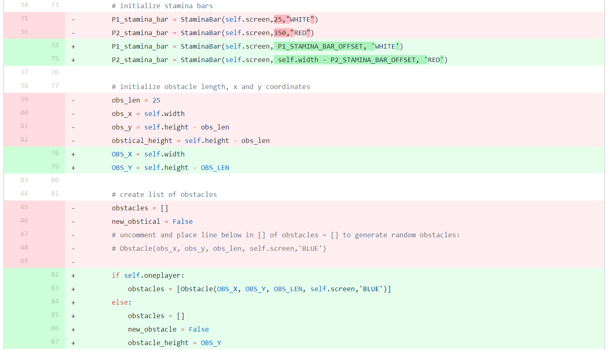
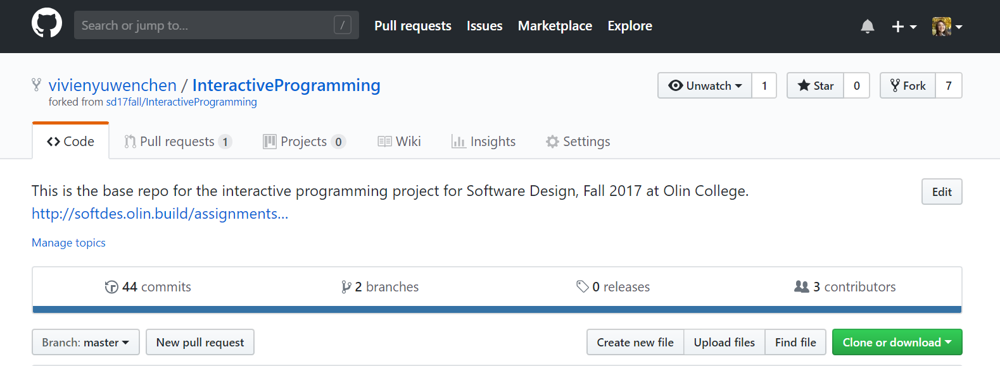

Inspirational Designs
Ballotpedia (Emma Price)
This site has a lot of information that people would be interested in, but not a lot of information on comparison and it has a pretty terrible user interface.

The website has a ton of great information, but it feels like a website that is spamming your computer when you’re using it. The informational links feel like they are pop-up ads, not something that you are actually meant to click on to learn more. The spam-like look does not create trust in the website or the information that it is presenting. When you do select a link, the page that appears:

Has two different sidebars, one for navigating between different pages and another for navigating within a single page. Though they are labeled, it’s not obvious which is which and it’s challenging to navigate.
Github (Vivien Chen)
Github’s idea of online change tracking is similar to something we want to do with tracking the progress of bills. We would want to display information on what status the bill is in (i.e. introduced, pending, passed), what changes have been made (i.e. additions, deletions):
who made these changes and when:

We would want to borrow Github’s change history with its dates of change, summary of changes, author of change (i.e. either specific person or level of government, whichever information is available online) for each bill. For each item in change history, we would also want the screen to be similar to Github’s in displaying deletions in one color and additions in another, which is visually helpful in distinguishing between the two. In addition to these borrowed items, we might want another screen that has a sort option between bills based on topic, government level, people involved, etc. rather than being organized in specific “repositories”.
Since Github is something of a developer site, there are a lot of functions that may too confusing for the general public, such as pull requests and forks.
Many such functions wouldn’t be necessary, first of all, since we can’t actually make changes to the bill. The names are also not very colloquial; something like “commenting” would make more sense, or “copying” the text from the bill for personal use (e.g. school project, writing a petition against the bill, etc.). It’s text heavy and a lot of the button are quite confusing if you’re using it for the first time. We would want to minimize a lot of this to make the learning curve very flat. In short, we like the change tracking of Github, not so much the version control and the general layout of functions.
FiveThirtyEight (Anne Ku)
Five Thirty Eight’s dynamic data visualization represents a subset of what we are trying to do. The site is well-spaced out and there are options on the left side where the viewer can select a viewing option that corresponds to his/her needs the most. I don’t know if this detail was supposed to be obvious, but there the contrast between the background and the diagrams/text makes it easy to see every word and detail. The site utilizes various types of visualizations too--I hope we can represent our information in creative ways too.

Allston Civic Association (Kaitlyn Keil)
Kaitlyn is no longer on the team, but we wanted to include this information because we know that her thoughts during this stage will still inform the rest of the project
Some neighborhoods have websites that present ways to get involved, supplying meeting dates and notes, current events/initiatives, and ways to connect with the community. Allston Civic Association is one of these websites. However, the design is not intuitive (clicking on the things above does nothing) and it is rather ugly (see below). While it looks ‘governmental’ because of colors, the lack of a cohesive or, let’s be honest, good design really shows the issues with a neighborhood maintained website. Depending on individuals within the neighborhood to be website designers and maintainers could lead to drastic discrepancies between neighborhoods, promoting higher-income areas while leaving the lower-income areas lacking--even though those are probably the places that need the most community buy-in.
Snapchat (Kaitlyn Keil)
Not as a perfect model, but Snapchat’s subscriptions provide a way to learn bits and pieces of a lot of information in a short amount of time. For getting more information, you can swipe up and learn more (often, not always). As a very popular app, this could be an interesting model to consider moving forward; however, I don’t currently know how successful the subscriptions are in comparison with all the other features. Another note is that all of these news sources are independently maintained, which puts the onus on local areas to keep it up-to-date.